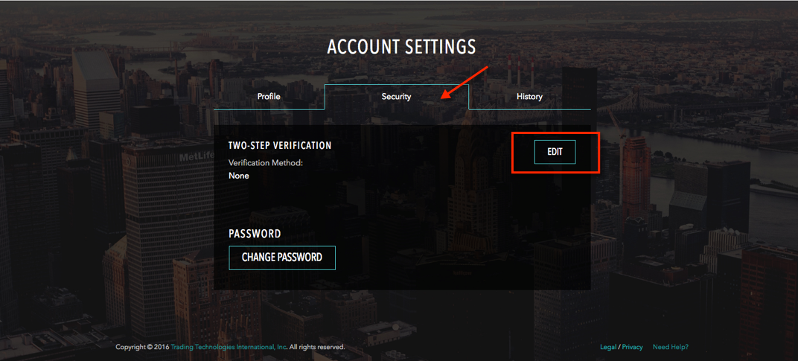
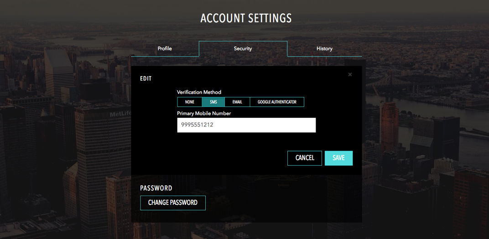

Click your account username in the title bar to open the Account Settings page.

On the Account Settings page, click the Security tab and click Edit.

Select a verification method. If you select SMS, enter a Primary Mobile Number. TT will send a confirmation text message to the mobile number that you enter.
